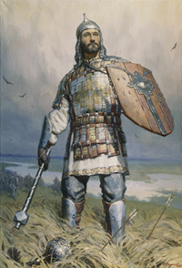

Хризолит (поделочные камни) |
||
Навигация |
Дмитрий Иванович Донской |
Наша армия |
|
Дмитрий Иванович родился 12 октября 1350 г. в Москве от второго брака удельного князя Звенигородского Ивана Красного (годы жизни: 1326-1359), второго сына великого князя Московского и Владимирского Ивана I Калиты (годы правления: 1325-1340). Мать княжича Дмитрия звали Александрой Ивановной. Больше о ней ничего не известно. Отец Дмитрия стал великим князем в 1353 г. после смерти от чумы своего старшего брата Симеона Гордого. Прозвание «Красный» он, очевидно, получил за свою внешность. Летописцы также называли его «Кротким» и «Милостливым», наверное, за особенности характера.  В 1380 году на Куликовом поле московский князь Дмитрий Иванович разгромил войска монгольского темника (военачальника) Мамая, узурпировавшего власть в Золотой Орде. Русским и раньше иногда удавалось бить монголов, но победы такого масштаба еще не было. Грамотно расположенные князем на поле боя войска выдержали натиск монгольской конницы, пока в тыл ей неожиданно не ударил резервный засадный полк, принесший окончательную победу. «Молодые с нами бились, а доблии (лучшие, старшие) сохранились», — произнесли тогда, согласно легенде, воины Мамая. Победа князя Дмитрия, прозванного за нее Донским, не принесла Руси освобождения от монгольских ханов. Тем не менее, это был важнейший шаг в этом направлении: выплаты дани Орде стали нерегулярными, русские княжества теперь не только оборонялись, но и сами организовывали походы против давнего врага. Москва же стала беспрекословным центром объединения русских земель, которые полностью избавятся от монгольского ига лишь спустя примерно сто лет, в конце 15 века. |
Поле Куликово славою покрыто. Дмитрия Донского имя не забыто. Он как воин бился, княжьи сняв доспехи, И его заслуга - воинства успехи. Русь объединилась, Русь сильнее стала, Белою жемчужиной ярко заблистала. Кремль при нём вознёсся каменной стеною. Им Орда разбита, став не золотою. Перед битвой страшной Бог благословил, Преподобный Сергий словом вдохновил. Кровь лилась рекою, горько плакал Дон, И по всей округе разносился стон. Войско над Мамаем одержало верх. Дмитрий неприятеля, как змею, поверг. Но не только княжий он носил венец, Дмитрий, храбрый воин, был герой-отец. Символ славы, чести, сын святой Руси, За Россию-матушку слово вознеси! |
|
|
IT-CUBE г.Балашова HTML , CSS |
||